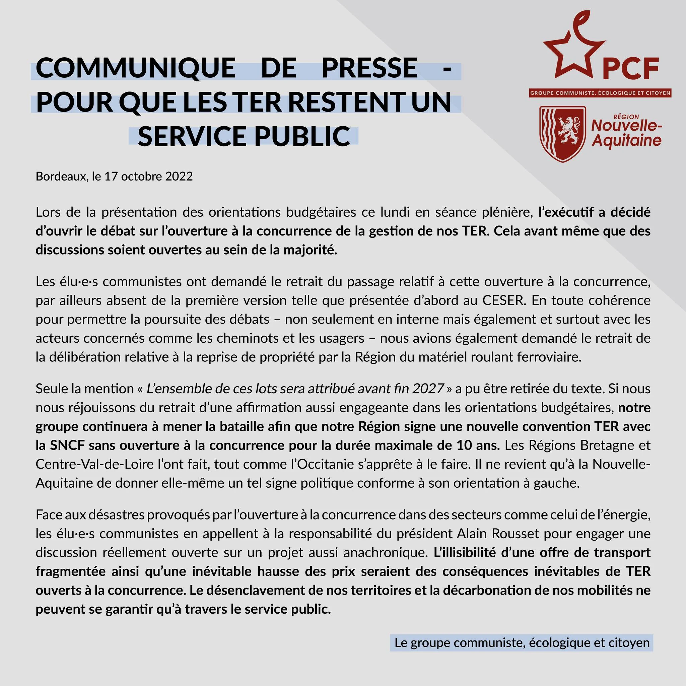

Communiqué relayé
Pour que les TER restent un service public. La position des élus communistes régionaux
Date indiquée par Facebook · 19 octobre 2022
Repères éditoriaux
Nous avons relayé le communiqué des élus communistes de Nouvelle-Aquitaine sur les orientations budgétaires et l’ouverture à la concurrence des TER.
Extrait de la publication d’origine
Pour que les TER restent un service public
Communiqué de presse des élu.e.s communistes de la région Nouvelle-Aquitaine, en réaction au débat sur les orientations budgétaires où sont inscrits les prémisses de l'ouverture à la concurrence des TER.
Dans la presse :
https://www.sudouest.fr/pyrenees-atlantiques/ouverte-des-lignes-ter-a-la-concurrence-en-nouvelle-aquitaine-les-communistes-dans-le-train-de-la-contestation-12608969.php
[lien retiré]

Sources
Archive rouge · export Facebook · AR-0002-FB-01833
À lire aussi · TER en Nouvelle-Aquitaine. Pour une convention renouvelée avec la SNCF